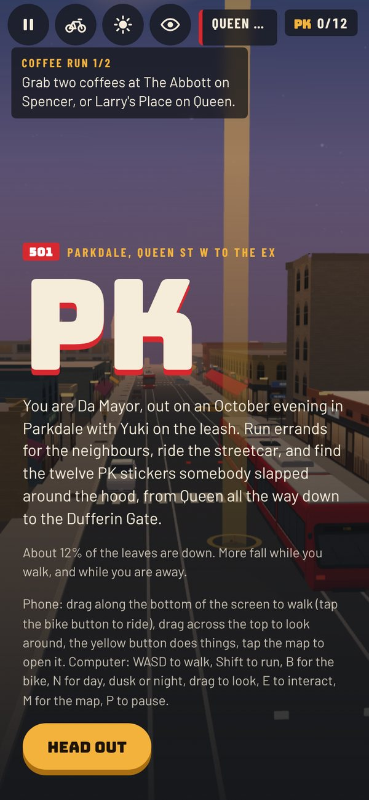
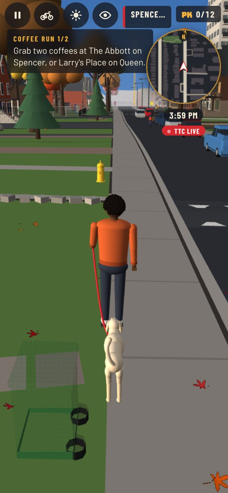
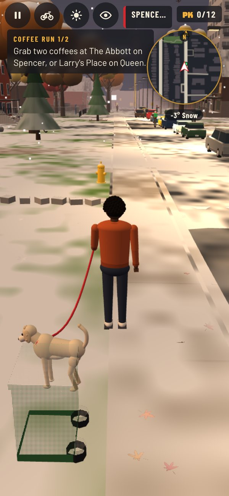
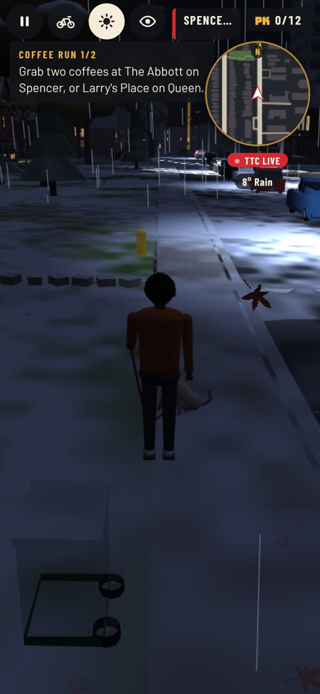
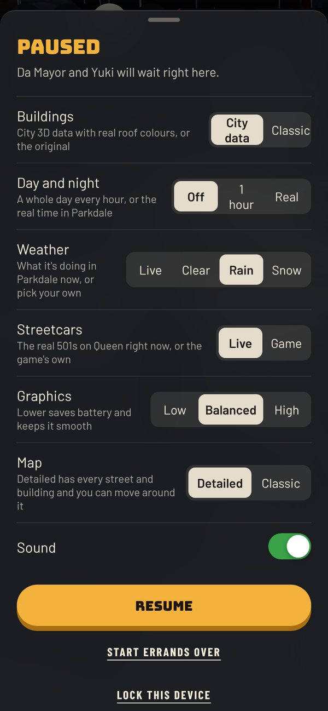
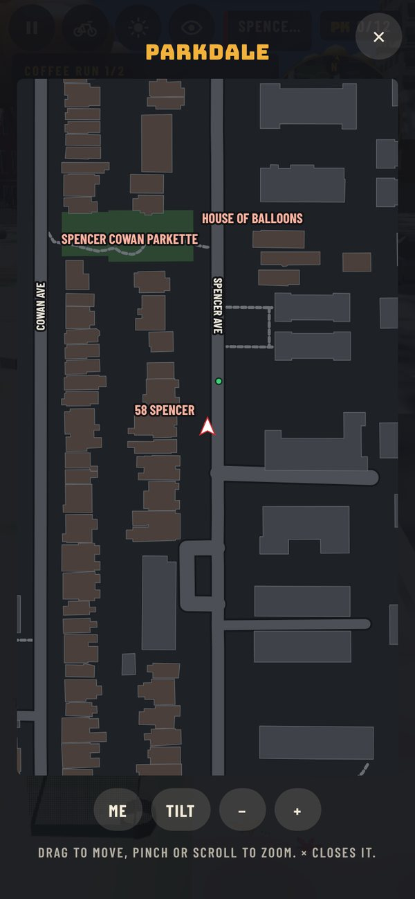

PK is an open-world walk around Parkdale on your phone. You play Da Mayor with Yuki on the leash, running errands for the neighbours, riding the 501 and hunting down twelve PK stickers between Queen and the Dufferin Gate. The streets, houses, shops, street trees, street lights and traffic signals come from real city data and sit on the real hills, and the neighbourhood follows what's actually happening outside: the weather in Parkdale right now, Toronto's real clock with the sun and stars for today's date, and the real 501s, 504s and 29 buses. It's invite only and runs in Safari or Chrome.

Head outThe title screen sets up the evening, shows how far into fall the trees are, and lists the controls for phone and computer.

Walk ParkdaleDrag along the bottom to walk and across the top to look. The current errand sits top left, the map top right with the live weather under it.

Snow that staysWhen there's snow on the ground in Parkdale it settles on roofs, lawns, sidewalks and tree tops, and the roads turn to grey slush.

Wet streetsRain darkens the ground and the white LED street lights shine back off it. It stays wet for a while after the rain stops, then dries out.

Your settingsThe pause menu picks the buildings, day and night cycle, weather, streetcars, graphics, map style and sound.

The mapTap the corner map to open the big one. Drag to move, pinch to zoom, tilt it, and jump back to Da Mayor.
A short run of errands starts with coffee from The Abbott on Spencer or Larry's Place on Queen, and includes riding the 501 from Dufferin to Roncesvalles. After that it's free roam to find the rest of the twelve stickers, some of them down past King. Progress saves on the phone.
Every 15 minutes PK checks Parkdale's weather. Rain and snow fall around you, leaves blow with the real wind, and people put up umbrellas. Snow on the ground comes from the real snow depth and melts off when it warms up. Wet streets follow rain now and the last three hours of it. Clear, Rain and Snow in the settings override it until you set it back to Live.
With Streetcars on Live, the 501s on Queen, the 504s on King, the Dufferin Gate car and the 29 Dufferin buses are the real ones from the TTC's vehicle feed (night routes too). Each carries on from its last report and eases into place at the next. A TTC Live tag shows under the clock, and a Queen stop shows when the next 501s are due. You can ride them. Game runs the made-up timetable, which also takes over if the feed drops.
PK follows the real time in Toronto unless you pick a fixed day, dusk or night, or a whole day every hour. Evenings go through golden hour and twilight, the street lights switch on around sunset, and windows light up one by one as people get home, thinning out after 11. Clouds follow the real cover. The sun, moon and stars are where they really are.
The City's own street trees and street light poles stand where it mapped them, and its traffic signals run at 18 crossings. Drivers keep their distance, stop at red, give way from the side streets and wait behind a streetcar with its doors open.
Neighbours walk their dogs, a garbage truck does its rounds, birds sing, a Canada goose owns the Spencer lawns, and raccoons raid the green bins at night. People take orange Bike Share bikes out and bring them back.
The game sits in the repo encrypted, and only the access code opens it. The code and your progress stay on your device. If something breaks, a short report of the error and the last few taps is sent so it can be fixed. It never includes game data.
Live vehicles only show on the stretches PK draws. Signals run a fixed cycle, not the City's real timings. Snow only settles on things that stay put.
| Source or library | Version | What it does | Loaded from | Licence |
|---|---|---|---|---|
| three.js | r128 | 3D rendering: scene, materials, instancing, shaders | cdnjs.cloudflare.com | MIT |
| Bungee, Barlow, Barlow Condensed | Google Fonts | Title, body and HUD type | fonts.googleapis.com | OFL |
| OpenStreetMap | Baked in | Streets, crosswalks, shops, parks, the Classic buildings | Inside the game file | ODbL |
| City of Toronto open data | Baked in | 3D Massing 2025 (buildings), Street Tree Data, Topographic Poles (street lights, signal poles), Traffic Signals, Traffic Volumes at Intersections (pedestrian counts) | Inside the game file | OGL Toronto |
| Slop Toronto | 2026 | Driving model, signal, give-way and streetcar rules, live vehicle easing, adapted | Ported into the game code | MIT |
| AWS Terrain Tiles | Baked in | Real ground elevation on an 8 m grid | Inside the game file | Open data |
| Bright star positions | Baked in | Stars and constellations | Inside the game file | Public data |
| PK game code | 2026.11.14 | Everything else: characters, vehicles, errands, weather, snow and wet shaders, live TTC | game.bin (encrypted) | Written for PK |
| Integration | Used for | Details |
|---|---|---|
| Open-Meteo | Parkdale weather | api.open-meteo.com/v1/forecast at 43.6395, -79.4335: temperature, weather code, cloud, wind, precipitation, snow depth. No key. Every 15 min. |
| TTC vehicle feed (Umo) | Live 501, 504 and 29 positions | retro.umoiq.com publicJSONFeed vehicleLocations for 501, 504, 29 (301, 304, 329 overnight). No key. Every 15 s while open. |
| TTC predictions (Umo) | Next cars at a stop | Same feed, 501 predictions by stop, only while you stand at a Queen stop. |
| GitHub Pages | Hosting | davidanthonyalleyne-dot.github.io/pk serves the gate page, game.bin and version.json. |
| Web Crypto | The lock | The access code goes through PBKDF2 (SHA-256, 250,000 rounds) to an AES-256-GCM key that decrypts game.bin in the browser. |
| Med Med Firestore | Bug reports | diag.js sends script errors and dead taps with the last 12 taps. No game data. |
| localStorage | Saving on the device | pkCode (access code), pk-parkdale-v4 (errands and stickers), pk-settings, pk-map, pk-season-v1, pk-wx-v2 (last weather reading). |
On the device: the whole game, including the street data, rendering, traffic and signals, people, weather effects and the transit matching. Live vehicles are matched to PK's Queen, King and Dufferin routes.
Network calls: three.js and the fonts at load, game.bin and version.json from GitHub Pages (version.json again every few minutes to offer updates), Open-Meteo, the TTC feed, and bug reports to Firestore.
Regenerating this document: shoot.js retakes the screenshots, pdf.js prints the PDF (docs/overview).